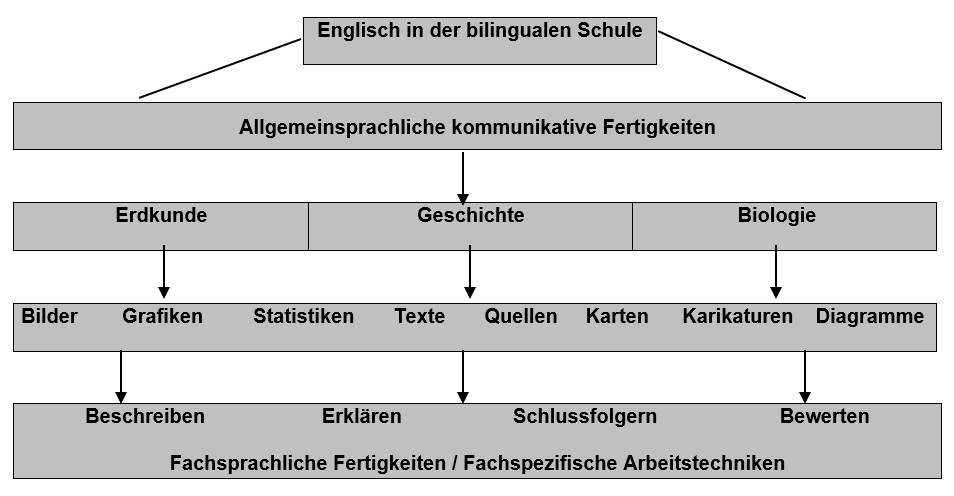

📘 Besondere Unterrichtsangebote
🌍 Bilingualer Unterricht
„Schulen mit europaorientiertem Profil wollen auf die Anforderungen einer zukünftigen Wissensgesellschaft in einem zusammenwachsenden Europa vorbereiten.“[3]
Das GREM versucht diesem Leitbild durch den bilingualen Bildungsgang in besonderem Maße zu entsprechen. Dabei entwickeln und fördern wir insbesondere die sprachliche Kompetenz, die interkulturelle Kompetenz und eine methodische Kompetenz. Wir wollen unseren Schüler*innen ermöglichen, ihr Wissen und Können nachhaltig und dauerhaft gesichert zu erwerben.
🧠 Die Bedeutung des bilingualen Lernens
Bilinguales Lernen heißt nicht nur, dass der Unterricht zweisprachig in Englisch und Deutsch stattfindet, sondern auch, dass übergreifende Lernziele im Vordergrund stehen:
Die Förderung der Sprachkompetenz mit dem Ziel der guten Verständigung in der Weltsprache Englisch,
Schaffung eines breiten Wissens über fremde Kulturen, damit die Jugendlichen des 21. Jahrhunderts in der Lage sind, am kulturellen und gesellschaftlichen Leben in den Partnerländern teilzunehmen,
Fachliche Sachverhalte in Lernbereichen wie Naturwissenschaften, Kultur und Geschichte in der Fremdsprache zu verstehen, zu verarbeiten und darzustellen.
Mit dem bilingualen Unterricht wollen wir unseren Schüler*innen optimale Voraussetzungen für Studium und Beruf verschaffen, denn bilinguales Lernen vermittelt Kenntnisse, Fähigkeiten und Fertigkeiten, die für das spätere Berufsleben in einem sprachlich und kulturell vielfältigen Europa wichtig sind.
📘 Bilinguales Lernen am GREM
An unserer Schule wurde der bilinguale Bildungsgang bereits im Jahre 1991 eingerichtet. Somit haben wir im Laufe der Jahre viel Erfahrung in bilingualen Bildungsfragen gesammelt. Aufgrund der starken Nachfrage bei Eltern und Schüler*innen hat die Schulkonferenz 2011 beschlossen, dass alle Schüler*innen der SI am bilingualen Unterricht teilnehmen.
Wir sind mit Lehrkräften für bilingualen Unterricht gut versorgt. Diese haben im Referendariat einen Schwerpunkt ihrer Ausbildung im Bereich des bilingualen Unterrichts gelegt.
🔄 Integration von sachfachlichem und sprachlichem Lernen

Die bilingualen Sachfächer am GREM sind die Erdkunde, Geschichte und Biologie. Das Fach Geschichte spielt hierbei eine besondere Rolle. Es bildet den bilingualen Schwerpunkt in der Oberstufe. Das findet seinen Ursprung in der Europaorientierung unserer Schule. Wir sind der Überzeugung:
Nur wer die Geschichte Europas und ihre vielfältigen Bezugspunkte kennt, ist in der Lage, den besonderen Wert unserer europäischen Kulturenvielfalt zu schätzen.
Nur wer über historisches Wissen verfügt, kann interkulturell kompetent und kommunikativ sein.
Nur wer grundlegende Kulturtechniken beherrscht, ist auf die Anforderungen einer zukünftigen Wissensgesellschaft vorbereitfMet.
Das Fach Geschichte – aus seinem Selbstverständnis heraus – bietet ein breites Methodenspektrum im Umgang mit Bildern, Quellen und Filmmaterial. Den Umgang mit diesen Kulturtechniken zu fördern ist ein zentrales Anliegen unseres Unterrichtens in allen Fächern. Daher bietet das Fach Geschichte nicht nur eine fachliche Basis für eine Europaorientierung, sondern auch ein methodisches Fundament.
Mit unserer bilingualen Partnerschule im niederländischen Venlo, dem College Den Hulster, führen wir einen regelmäßigen Schüler*innenaustausch durch, der in englischer Sprache durch die Erarbeitung von Unterrichtsmaterialien vor- und nachbereitet wird und die Erstellung von englischsprachigen Schüler*innenarbeiten beinhaltet.
🗂️ Wie ist der bilinguale Bildungsgang organisiert?
Seit einigen Jahren lernen alle Schüler*innen bereits in der Grundschule Englisch. Dies stellt eine neue Herausforderung für die weiterführenden Schulen insgesamt dar. Dieser Herausforderung begegnen wir mit einer breit angelegten Sprachförderung für alle Schüler*innen in der Erprobungsstufe. Oftmals sind divergierende Vorkenntnisse auf Seiten der Schüler*innen vorhanden und der reguläre Englischunterricht kann darauf nur unzureichend eingehen. All unsere Schüler*innen erhalten daher in den Klassen 5 und 6 zwei zusätzliche Stunden pro Woche Englischunterricht, um sie individuell zu fördern und zu fordern.
In den Klassen 7 bis 9 werden die Sachfächer Erdkunde, Biologie und Geschichte entweder vollständig oder in Modulen bilingual englisch-deutsch unterrichtet und bilden so den Schwerpunkt der bilingualen Ausbildung in der Mittelstufe.In der Oberstufe entscheiden die Schüler*innen, ob sie die bilinguale Ausbildung fortsetzen wollen. Sie haben dann die bilingualen Sachfächer Geschichte und Biologie in der Einführungsphase, später den Leistungskurs Englisch und einen Geschichts- oder Biologiegrundkurs bilingual. Sie erhalten nach bestandener Abiturprüfung ein Zertifikat. Der Zugang zu Studium oder Berufsausbildung im englischsprachigen Ausland wird damit erleichtert.
Unsere Schule ist Mitglied in der „Arbeitsgemeinschaft der bilingualen Gymnasien in NRW“. Wir stehen somit in ständiger Verbindung und Austausch mit vielen anderen Schulen mit bilingualem Zweig in Nordrhein-Westfalen.
Weitere Informationen und Materialien zu bilingualen Bildungsgängen finden Sie unter:
Die folgende Übersicht weist die im bilingualen Zweig unterrichteten Sachfächer und ihre Wochenstundenzahl in der jeweiligen Jahrgangsstufe aus.
Jgst. |
Englisch |
Sachfach bilingual englisch/deutsch |
|---|---|---|
5 |
4+1 erweiterter E-Unterricht |
- |
6 |
4+1 erweiterter E-Unterricht |
- |
7 |
4 |
3 EK |
8 |
3 |
3 BI + 3 GE |
9 |
3 |
2 EK + 2 GE |
EF |
3 (Grundkurs, GK) |
3 GE GK + 3 BI GK |
Q1 |
5 (Leistungskurs, LK) |
3 GE / BI GK |
Q2 |
5 LK |
3 GE / BI GK |
Abitur |
LK schriftlich |
GE / BI GK schriftlich oder mdl. |
🗣️ Sprachenkonzept
🗂️ Sprachenfolge
Das GREM ist ein bilinguales Gymnasium, an dem neben Englisch als erster Fremdsprache auch Französisch und Latein (ab Jg.7), Niederländisch (ab Jg.8), Italienisch (ab Jg. EF) und in der Kooperation mit dem Georg-Forster-Gymnasium Kamp-Lintfort Russisch (ebenfalls ab Jg. EF) unterrichtet wird.
🧪 Methodische Grundlagen unseres Fremdsprachenunterrichts
Als Europaschule fühlen wir uns in besonderem Maße dem europäischen Kerngedanken verpflichtet, in der Vielfältigkeit auch die Gemeinsamkeiten zu erkennen. Für uns bedeutet dies zum einen, sich der Vielfältigkeit der europäischen Kulturen bewusst zu werden, neben Unterschieden aber auch Gemeinsamkeiten zu erkennen. An unserer Schule möchten wir dieser Idee Rechnung tragen, indem Fremdsprachen nicht isoliert gelernt, sondern immer kontextbezogen angewendet und „gelebt“ werden. Nur so können wir, unserer Meinung nach, die Schüler*innen interkulturell handlungsfähig machen und optimal auf das spätere Berufsleben in einem sprachlich und kulturell vielfältigen Europa vorbereiten. Dies bedeutet auch, dass die einzelnen Fremdsprachen untereinander sehr eng zusammenarbeiten: so sind bei uns z. B. fächerübergreifend die Kriterien zum Verfassen bestimmter Textsorten standardisiert und die Befähigung, Kenntnisse in einer Sprache auf eine zweite Fremdsprache zu transferieren, stehen in unserem Unterricht in besonderem Maße im Fokus.
Fremdsprachenunterricht bedeutet an unserer Schule folglich nicht Spracherwerb mit dem Schwerpunkt des Erlernens grammatikalischer Strukturen. Vielmehr ist es uns wichtig, dass die Schüler*innen Fremdsprachen von Beginn an als Kommunikationsmittel und Arbeitssprache anwenden und erfahren. Oberstes Ziel im Unterricht sind daher stets eine starke „Anwendungsorientierung und [die Schaffung] eines lebensweltlichen Bezugs“[4] für die Schüler*innen. Im Fremdsprachenunterricht aller bei uns zu erlernenden Fremdsprachen erwerben Schüler*innen neben der Fremdsprache exemplarisches soziokulturelles Wissen über das Zielland, wobei stets darauf geachtet wird, dass die ausgewählten Themen und Inhalte auch den Interessensgebieten der Schüler*innen entsprechen und einen Bezug zur eigenen Lebenswelt haben.
Um den Anwendungsbezug zu stärken, haben unsere Schüler*innen zahlreiche Möglichkeiten, die Fremdsprache in authentischen Begegnungssituationen auszuprobieren und anzuwenden. Bereits am Ende der 6. Jahrgangsstufe können die Klassen nach England fahren und dort in Gastfamilien ihre bisher erworbenen Kenntnisse anwenden[5] oder sie nehmen an einer englischsprachlich orientierten Projektwoche vor Ort oder in der näheren Umgebung teil: „Diese ersten Erfahrungen im Anwenden der Fremdsprache stellen [gleichzeitig] eine Vorbereitung auf den Gebrauch der Sachfachfächer dar.“[6]. Des Weiteren bietet unsere Schule allen Schüler*innen zahlreiche internationale Projekte und Austauschmaßnahmen an, bei denen die Schüler*innen die Möglichkeit haben, die jeweilige Fremdsprache als Arbeitssprache und zur alltäglichen Kommunikation zu benutzen, um ihre landeskundlichen Kenntnisse zu erweitern und ihre interkulturelle Handlungskompetenzen zu schulen[7]:
7. Klasse: I.d.R. Austausch mit Venlo, NL, unter dem Aspekt „Wir in Europa – Stärkung der Medienkompetenzen der Schüler*inneninnen und Schüler*innen“
9. Klasse: Austausch mit Vincennes, F, unter dem besonderen Aspekt der Förderung der deutsch-französischen Freundschaft.
9. Klasse und EF: Austausch mit Deurne, NL, für Niederländisch lernende Schüler*innen
Q1: Austausch mit Cittadella, I, unter dem Aspekt kultureller, geographischer und geschichtlicher Exkursionen sowie der gemeinsamen Arbeit an einem interkulturellen Projekt
Q1: 4-wöchiges Auslandspraktikum in Kooperation mit der Partnerschule in Abano Terme, I.
Aufgrund der Tatsache, dass 95% unseres Sprachgebrauchs mündlich erfolgt, ist ein weiterer Schwerpunkt der methodischen Gestaltung des Unterrichts die „Stärkung der mündlichen Kommunikationsfähigkeit“[8]. Rechnung wird diesem Konzept auch getragen, indem bereits in der Sekundarstufe I Teile der Klassenarbeiten durch mündliche Prüfungen ersetzt werden (können) und schließlich die Schüler*innen der Qualifikationsphase eine mündliche Prüfung anstelle einer Klausur ablegen.
Grundsätzlich gilt es in der Oberstufe in besonderem Maße, die wissenschafts- und berufsorientierte Kommunikation zu fördern[9], um die Schüler*innen in die Lage zu versetzen, den Weg in die Berufswelt auch mit der Fremdsprache zu ermöglichen.[10] Entsprechend bietet unsere Schule neben dem Unterricht zur Förderung der leistungsschwachen, aber auch der leistungsstarken Schüler*innen verschiedene Vertiefungs- und Projektkurse, in denen entsprechend der jeweiligen Interessen und Bedürfnisse eine individuelle Förderung erfolgt. Gerade im Projektkurs ist es uns wichtig, dass die Schüler*innen Verantwortung für ihr Sprachenlernen übernehmen und ihre sozialen und kooperativen Kompetenzen schulen, z.B. indem sie komplexe Themen und Aufgabenstellungen selbständig in Gruppen bearbeiten[11]. Oftmals erfolgt in diesen Kursen fächerübergreifendes Lernen, sowohl auf inhaltlicher als auch methodischer Ebene.
🔤 Bilingualität
An unserer Schule nehmen alle Schüler*innen am bilingualen Bildungsgang teil - entweder in bilingualen Klassen oder durch bilinguale Module. Dies bedeutet, dass der Englischunterricht in der 5. und 6. Klasse um zwei weitere Englischstunden ergänzt wird. Ab dem 7. Schuljahr werden dann ein bis zwei Sachfächer auf Englisch unterrichtet. Besonders in gesellschaftswissenschaftlichen Fächern (bei uns Politik, Geschichte, Erdkunde) erfolgt auf besondere Weise eine Vertiefung der interkulturellen Handlungsfähigkeit, da die Schüler*innen nicht selten auch die Perspektive des Partnerlandes einnehmen. Um dem Englischen als Wissenschaftssprache Rechnung zu tragen, wird bei uns zudem das Fach Biologie in Englisch angeboten.[12] Durch diese Internationalisierung der Schulkultur werden die „Jugendlichen auf eine Zukunft im sprachlichen und kulturell vielfältigen Europa […] vorbereitet.“[13] (nähere Informationen)
🏅 Zertifikate / Zeugnisse
Das GREM darf als eine von wenigen Schulen in Deutschland das Exzellenz-Label CertiLingua ausstellen.
Darüber hinaus ist es an unserer Schule möglich, ein bilinguales Abitur mit dem Sachfachfächern Geschichte und Biologie abzulegen. In diesem Zusammenhang wählen die Schüler*innen den Leistungskurs Englisch und entweder Biologie oder Geschichte in Englisch als drittes oder viertes Abiturfach.
Grundsätzlich ist uns wichtig, dass unser Unterricht sich an dem Maßstab der „Internationalisierung fremdsprachlicher Standards, die sich an den Referenzniveaus des Gemeinsamen europäischen Referenzrahmens für Sprachen: lernen, lehren, beurteilen (GeR)[14]“ orientiert. Dementsprechend werden die Schüler*innen in unserem Unterricht so vorbereitet, dass sie regelmäßig international anerkannten Prüfungen auf verschiedenen Niveaustufen (B1, C1, C2) ablegen und somit Sprachzertifikate wie z.B. das DELF (F), Ele.it (It) und CNaVT (NL), erhalten.
🏛️ Rolle des Faches Latein
Zukunft braucht Vergangenheit. Latein baut Brücken zwischen Vergangenheit und Gegenwart mit der lebendigen Vermittlung von lateinischer Sprache und antiker Kultur.
Im Austausch mit der Antike gelingt es anhand von Originaltexten die europäischen Wurzeln zu erforschen und eigene Standpunkte im Vergleich mit der Gegenwart zu entwickeln.
Die lateinische Sprache bietet Schulung in Bereichen des logischen Denkens, fördert die Analysekompetenz und die Fähigkeit zur Strukturierung durch Differenzierung kleinster bedeutungstragender sprachlicher Einheiten in besonderem Maße.
Daher ist Latein für bestimmte Lerntypen unter den Schüler*innen vorteilhaft. Und es bietet z.B. in der Kombination mit Geschichte und Philosophie einen wichtigen Zugang für spätere Geisteswissenschaftler. Weiterhin verlangen in vielen Bundesländern die Hochschulen das Latinum als Zugangsberechtigung für verschiedene Fachrichtungen.
📊 Sprachenfolge und Stundenzahl am GREM (gilt für G8).
Jgst. |
Sprache |
Wochenstd. |
|---|---|---|
5–10 |
E |
4+1 / 4+1 / 4 / 3 / 3 |
7–10 |
Wahlpflicht I: F oder L |
4 / 4 / 3 / 3 |
9+10 |
Wahlpflicht II: Bei Wahl der 3. Fremdsprache NL |
3 / 3 |
11–13 |
je nach Wahl: E oder F oder L oder NL oder I oder Rus |
Je 3 (neu einsetzend 4) |
🧪 MINT-Schwerpunkt
Unter dem Begriff MINT-Fächer werden die Fächer aus dem Bereich Mathematik, Informatik, Naturwissenschaft und Technik verstanden. Für uns am GREM ist es wichtig, dass wir unseren Schüler*innen neben dem sprachlichen Schwerpunkt (bilingualer Unterricht) und dem musischen Schwerpunkt (SOON) auch in diesem Bereich ein attraktives Angebot machen können. MINT wird an unserer Schule in vielfältiger Form gelebt, von der Technik-AG für Mädchen in der Jahrgangsstufe 5 bis hin zu Leistungskursen in MINT Fächern im Abitur. Daher werden im Folgenden nur einzelne wichtige Säulen unseres MINT-Konzepts exemplarisch dargelegt.
Bereits in der Sekundarstufe I bieten sich den Schüler*innen zahlreiche Möglichkeiten, neben dem normalen Fachunterricht in Mathematik, Physik, Chemie und Biologie schon früh ihre Fähigkeiten im MINT-Bereich auszuprobieren und zu entwickeln, etwa bei Mathematikwettbewerben (vom Känguru Wettbewerb bis hin zur Mathe-Olympiade, in der Roboter-AG (Roberta) oder bei Projekten in Zusammenarbeit mit dem MINT Zentrum in Duisburg, wenn es um „Zukunft durch Innovation“ (zdi) geht.
Zusätzlich gibt es optionale Angebote gerade auch für leistungsstärkere Kinder, wie etwa im Zuge der individuellen Förderung für unsere „Cleverixe“ oder im Rahmen des Erasmusprogramms. Seit 2003 arbeiten wir intensiv mit Schulen im In- und Ausland in Comenius-Projekten zusammen, in denen wir in erster Linie technische Projekte auch auf internationaler Ebene realisieren, so etwa aktuell im Bereich der Ökologie und zu regenerativen Energien.
Neben der Verzahnung von MINT und Sprache im Rahmen des bilingualen Unterrichts der Jahrgangsstufe 8 (Biologie auf Englisch) bietet das GREM im WP II Bereich der Jahrgangsstufen 8 & 9 die Möglichkeit, „Chemie & Biologie“ als naturwissenschaftliches Kombinationsfach, Informatik oder auch „Forschen und Entwickeln (FuE)“ zu wählen.
Mit dem Fach „Forschen und Entwickeln" bietet das GREM ein selbständiges Fach jenseits des normalen Fächerkanons an, das sich vor allem der Entwicklung der Kompetenzen im MINT-Bereich verschrieben hat. Für dieses Pilotprojekt wurde an unserer Schule eigens ein neuer Technikraum installiert, der mit einer sehr guten Ausstattung aufwartet.In der Sekundarstufe II stehen Schüler*innen nicht nur Leistungskurs- und Grundkursangebote in den Fächern Mathematik, Biologie, Chemie und Physik zur Auswahl, sondern es gibt dabei auch die Möglichkeit, das Fach Biologie weiterhin auch auf Englisch anzuwählen. So können in der Sekundarstufe I erworbene Fähigkeiten in der Oberstufe zielgerichtet und kontinuierlich bis hin zum Abitur weiter ausgebaut werden.
Des Weiteren bietet auch die Oberstufe neben dem normalen Fachunterricht interdisziplinäre Projektkurse an, in denen unsere Schüler*innen wissenschaftspropädeutisch in den MINT-Fächern arbeiten können, so etwa in Bereichen wie der Nanotechnologie (Schuljahr 2012/13) oder der Ökologie (Schuljahr 2014/15). Zusätzlich initiieren wir in Zusammenarbeit mit der Universität Duisburg ein „Probestudium“ in den Fächern Physik und Elektrotechnik/Informationstechnik, bei dem wir unsere Schüler*innen begleiten und beraten. Eine intensivere Kooperation mit der Hochschule Rhein-Waal in Kamp-Lintfort ist für die nächsten Jahre geplant.
Bereits seit vielen Jahren bieten wir unseren Schüler*innen in den MINT-Fächern ein vielfältiges und attraktives Angebot und die Leistungen unserer Schüler*innen bei Wettbewerben zeigen, dass wir hier auch immer wieder ein sehr hohes Niveau erreichen: So stellte das GREM beispielsweise den Preisträger im Bundeswettbewerb von „Jugend forscht“ im Jahr 2012 in Physik. Seit 2015 ist das GREM MINT-EC-Schule (EC=Excellenz). Dadurch wird unsere Arbeit im MINT-Bereich zertifiziert und honoriert. Wir erhalten die Möglichkeit mit Unterstützung des Netzwerks der MINT-EC-Schulen das MINT-Profil weiter zu schärfen und sowohl Schüler*innen als auch Lehrer*innen weiter interessante Angebote zu machen. Als MINT-EC Schule stellen wir unseren Abiturient*innen mit dem Zeugnis der „Allgemeinen Hochschulreife“ auch ein Zertifikat über besondere Leistungen im MINT-Bereich aus, die im Verlaufe der Schulzeit erbracht worden sind.
🧳 Austausch, Fahrten und Projekttage: „Auf dem Weg nach Europa“
„Schulen mit europaorientiertem Profil wollen auf die Anforderungen einer künftigen Wissensgesellschaft in einem zusammenwachsenden Europa vorbereiten.“ [3]
Wir versuchen dem Leitbild unserer Schule auch im Fahrtenprogramm gerecht zu werden, indem es in besonderem Maße ein europäisches Profil aufweist. Die angestrebten Lernziele sind dabei sowohl inhaltlicher als auch methodischer Natur. Zudem betreffen sie nicht nur die „fahrenden“ Jahrgangstufen, sondern auch die „nicht-fahrenden“ Jahrgangsstufen, die in Form von Projekttagen bzw. Methodentagen mit der Lern- und Arbeitswelt in Europa vertraut gemacht werden.
Diese Aktivitäten finden gebündelt in unserer jährlichen Europawoche, der Projekt- und Fahrtenwoche statt. Diese liegt i.d.R. im Zeitraum um Pfingsten und wird jedes Jahr in Abstimmung mit den vorgegebenen Schulterminen neu festgelegt. Wir nutzen konsequent Synergieeffekte: Zum einen schaffen wir ein umfangreiches und attraktives Fahrtenprogramm, zum anderen halten wir somit nicht nur den Unterrichtsausfall für unsere Schüler*innen gering, sondern liefern ihnen eine Projekt- und Arbeitswoche, die sie auf die zukünftigen Anforderungen in Europa vorbereitet.
Internationale Austausche bedeuten nicht nur gegenseitige Besuche von Schulen und Familien, sondern auch Austausch von Einstellungen, Traditionen und Kulturen. Bei Fahrten ins europäische Ausland werden dabei wesentliche Lernziele zum Erwerb europäischer Kompetenzen erreicht, wie z.B. Kennenlernen anderer Schulsysteme und anderer Lebensarten, Alltagsgebrauch von Fremdsprachen, Entwicklung europäischer Freundschaften, Zurechtfinden im Ausland etc.
Die finanzielle Situation des Landes NRW verbietet der Schulleitung 2014 Fahrten zu genehmigen, wenn die Erstattung der Reisekosten der begleitenden Lehrer nicht gewährleistet ist. Wir versuchen durch Ausschöpfung aller möglichen Ressourcen (Zuschüsse, Sponsoren, Förderverein, Freiplätze etc.) so viele Fahrten wie möglich durchzuführen, müssen aber von Jahr zu Jahr entscheiden, was vorrangig und möglich ist.
🗺️ Fahrtenprogramm – Übersicht
Für die verschiedenen Jahrgangsstufen sind folgende Fahrten und Austausche durch die Schulkonferenz verankert:
Im Jg.5 steht eine 4- bis 5-tägige Fahrt in eine Jugendherberge in die nähere Umgebung an, um nach dem Schulwechsel zum Gymnasium den Kontakt der Schüler*inneninnen und Schüler*innen untereinander zu intensivieren, aber auch um die Klassenlehrer der 5. Klassen in einem Jahrgangsstufenteam enger miteinander in Kommunikation treten zu lassen. Die Schulkonferenz hat eine Kostenobergrenze von 200 € inkl. Verpflegung und Eintritte für die Fahrt beschlossen (Stand 2017). Die Kostenobergrenze steigt pro Jahr um 5 € (Beschluss Sep.2017).
Die Klassen des Jg.6 fahren nach England, damit unsere Schüler*innen ihre bis dahin erworbenen Englischkenntnisse vor Ort in Gastfamilien anwenden. Die Schulkonferenz beschloss 2016, dass die Fahrt ab 2018 als verpflichtende Klassenfahrt mit einer Kostengrenze von 290€ ins Fahrtenprogramm aufgenommen wurde. Die Kostenobergrenze steigt pro Jahr um 5 € (Beschluss Sep.2017). Bedingt durch die Coronapandemie erfolgt die Jahrgangsstufenfahrt im Schuljahr 21/22 geschlossen nach Bad Honnef.
In den Stufen 7 und 8 stehen keine regulären Fahrten, sondern Projekttage an. Die Vorbereitung auf das Leben und Arbeiten im zusammenwachsenden Europa verknüpfen wir mit der Aufarbeitung von für diese Altersstufe typischen Verhaltens- und Wissensdefiziten im Bereich „Sozialverhalten“ und „Medienkompetenz“ (Jg. 7).
In der Jgst.8 finden Berufsfelderkundungstage im Rahmen von „KAoA“ (kein Abschluss ohne Anschluss) statt.
Die Erasmus+ -Projektgruppe in den Jg. 8 und 9, die von der EU gefördert wird, hält regelmäßig Projekttreffen mit ihren spanischen und polnischen Schüler*innen ab. In der „summer school“ am Ende jedes Schuljahres in einer der Partnerschulen werden die Projektergebnisse des Jahres präsentiert und in internationalen Gruppen sprachliche und technische Workshops durchgeführt. Projektsprache ist hauptsächlich Englisch, aber auch Spanisch, Katalan, Polnisch und Deutsch werden gesprochen. In 2016 wurde unser neues Projekt ESWER (European Students Work on Energy Revolution) für 3 Jahre genehmigt und gefördert (🡪 Kap. 4.4).
Im Jg.9 begeben sich unsere Schüler*innen dann im eigentlichen Sinn „Auf den Weg nach Europa“, meist mit dem Ziel Berlin, aber auch ins europäische Ausland**.** Thematisch spielt die besondere Verantwortung Deutschlands für ein friedliches Zusammenleben in Europa eine zentrale Rolle. Die Erarbeitung geschieht in enger Zusammenarbeit und Anlehnung an den Politik- und Geschichtsunterricht. Die Kostenobergrenze inkl. Verpflegung und Eintritte wurde von der Schulkonferenz auf 250 € festgesetzt. (Stand 2017). Die Kostenobergrenze steigt pro Jahr um 5 € (Beschluss Sep.2017).
Der Frankreichaustausch mit dem Collège Privé Notre**-**Dame-de-la-Providence in **Vincennes** bei Paris ist seit einigen Jahren fester Bestandteil unseres europaorientierten Fahrtenkonzeptes. Passend ist, dass in der Stufe 9 die französische Revolution und ihre Auswirkungen auf Europa Gegenstand im Geschichtsunterricht sind. Zugleich ist es für einige Schüler\*innen die erste Gelegenheit, authentische Kommunikationsversuche in ihrer dritten Fremdsprache zu unternehmen.Darüber hinaus empfehlen wir eine Tagesfahrt nach Brüssel, um die europäischen Institutionen vor Ort kennen zu lernen. Dies geschieht in enger Verknüpfung mit dem Politikunterricht.
Seit 2018 haben wir mit dem Wilibrord Gymnasium in **Deurne** (NL) eine Austausch-Partnerschaft für Niederländischkurse in den Jg.9 und EF vereinbart. Die Ziele sind neben den allgemeinen Europazielen die besondere Förderung der Sprachkompetenz im Fach Niederländisch.In der Einführungsphase 10 findet in der Europawoche das Berufspraktikum statt.
Zu Beginn der Oberstufe führen wir mit der gesamten Stufe EF zweitägige Methodentage in einer benachbarten Jugendherberge durch. Hier bereiten wir die Schüler*innen gezielt auf die besonderen Anforderungen der Oberstufe vor.
Die Studienfahrt der Qualifikationsphase Q1, die innerhalb der Leistungskurse organisiert und durchgeführt wird, findet ebenfalls unter dem Schwerpunkt „Auf dem Weg nach Europa“ statt und führt ins europäische Ausland. So können alle in der Oberstufe angebotenen Sprachen von unseren Schüler*innen als „Lingua Franca“ angewendet und erprobt werden. Die Fahrten werden durch landeskundliche Referate im Unterricht vorbereitet. Die Kostenobergrenze inkl. Verpflegung und Eintritte wurde von der Schulkonferenz auf 380 € festgesetzt (Stand 2017). Die Kostenobergrenze steigt pro Jahr um 5 € (Beschluss Sep.2017). Im Schuljahr 21/22 fasst die Schulkonferenz den Beschluss, die Fahrten der Q2 ausschließlich innerhalb Deutschlands stattfinden zu lassen.
Seit 2010 wird regelmäßig zusätzlich ein Italienaustausch mit unserer Partnerschule Instituto Tecnico Statale Girardi bei Venedig für die Italienisch-Kurse der Q1 durchgeführt.
** 🤝 Liste unserer Schulpartnerschaften**
Name |
Adresse |
Land |
E-Mail / Website |
seit |
Inhalte |
|---|---|---|---|---|---|
College den Hulster |
Hagerhofweg 15, 5912 PN Venlo |
NL |
info@denhulster.nl, www.collegedenhulster.nl |
1991 |
Austausch, Projekte |
Willibrord-Gymnasium |
Beukenstraat 80, 5753 GD Deurne |
NL |
www.willibrordgymnasium.nl |
2017 |
Austausch, Projekte |
S.E.S. de Navarcles |
Cami de l’Angla 8, 08270 Navarcles |
ES |
a8059524@xtec.cat, www.xtec.cat/sesnavarcles |
2002 |
Erasmus+ Projekte |
CCE Virgen del Pasico |
Vrda. Orihuela, 30700 Torre Pacheco |
ES |
www.virgendelpasico.net |
2020 |
Erasmus+ Projekte |
Zespół Szkolno-Przedszkolny nr 12 |
Lipowa 29, 44-100 Gliwice |
PL |
www.gim10.gliwice.pl, gim10-gliwice@oswiata.org.pl |
2010 |
Erasmus+ Projekte |
Instituto Tecnico Statale Girardi |
Via Kennedy 29, 35013 Cittadella |
IT |
info@girardicittadella.it, www.girardicittadella.it |
2009 |
Austausch |
Istituto di istruzione sup. L.B. Alberti |
Via A. Pillon 4, 35031 Abano |
IT |
www.lbalberti.it |
2018 |
Erasmus+ Projekte |
Notre Dame de la Providence |
41 Rue de Fontenay, 94300 Vincennes |
FR |
www.laprovidence.fr |
2008 |
Austausch |
Kuressaare Gümnaasium |
Nooruse 1, 93815 Kuressaare |
EE |
www.oesel.ee |
2019 |
Erasmus+ Projekte |
1st Lyceum of Alimos Thukydideio |
Ipsilantou & Thiseiou, 17455 Alimos |
GR |
http://1ly-alimou.att.sch.gr |
2020 |
Erasmus+ Projekte |
Hj. Nortamon peruskoulu |
Nummenvake 5, 26100 Rauma |
FIN |
https://peda.net/rauma/koulut/notilanrinne |
2020 |
Erasmus+ Projekte |
🧑🤝🧑 Wandertage
Natürlich hat jede Klasse die Möglichkeit, individuelle Ziele für die Wandertage zu wählen, jedoch halten wir es für besonders wichtig, soziale Kompetenzen und das Miteinander in einer Klassengemeinschaft im Zuge von Wandertagen zu fördern. Daher veranstalten wir für die Jg. 7 oder 8 einen „Sozialtag“, der in der Regel am 1. Wandertag im Schuljahr stattfindet. An diesem Tag werden die einzelnen Klassen durch fachlich kompetente Pädagog*innen von außerhalb in ihrem Sozialverhalten geschult und gefördert. Dies hilft nicht nur den Schüler*innen einer Klasse, sondern befördert das allgemeine Lernklima und die Arbeitsatmosphäre an unserer Schule. Der 2. Wandertag im Schuljahr ist in der Regel in der Woche vor den Sommerferien. Somit nutzen wir die letzten Schultage sinnvoll und sorgen durch diese zentrale Abstimmung für ein möglichst niedriges Maß an Unterrichtsausfall im Verlauf des Schuljahres.
🧳 Projekttage
Die regelmäßige Durchführung von Projekttagen wurde von der Schulkonferenz beschlossen. Gewisse Eckpunkte haben sich bewährt, wie z.B. die Einbeziehung von Fachkräften außerhalb des Lehrerkollegiums oder der Präsentationsnachmittag am Ende, an dem die Projektergebnisse öffentlich gemacht werden. Projekttage für die Jg.7 und 8 finden jährlich in der Fahrtenwoche statt (s.o.). Darüber hinaus sind zusätzliche Projekttage zu besonderen Anlässen wie z.B. Schuljubiläen möglich. Es ist uns wichtig, dass Projektorientierung nicht beschränkt ist auf schulische Projekttage, sondern immer stärker Eingang findet in den Unterricht und in die Angebote im Ganztag.
🌍 Auslandspraktika
Im Rahmen des Betriebspraktikums in der 10 haben die Schüler*innen die Gelegenheit, das Praktikum im Ausland abzulegen. Eine Praktikumsstelle bei der Landesvertretung bei der EU in Brüssel steht dauerhaft zur Verfügung, weitere werden durch unsere Kooperationspartner bereitgehalten.
Das Austauschjahr (High-School Year)
Hierzu haben wir ein Informationsblatt erarbeitet, das auf unserer Website zu finden ist.
🧭 Fahrtenprogramm – Übersicht
(beschlossen für 2017 bis 2020, Änderungen für 21/22 s. Seite 31f.)
🎭 Musiktheater SOON und „Musik plus“
🎤 SOON
Das Projekt SOON besteht seit 1992 und ist in seiner Art das größte Musik-Theater in Deutschland. Rechnet man „Young SOON“ dazu, ergibt sich eine Mitgliederzahl von etwa 270 Schüler*innen, die im Chor, Big Band, Theater-AG und Technik-AG mitarbeiten.
SOON führt klassische Musicals wie „West Side Story“ auf, produziert themengebundene Shows wie „Tommy“, widmet sich aber auch Klassikern der Literatur wie „1984“.
Für die Schule hat SOON vielfältige Bedeutung:
SOON wirkt und vertritt die Schule nach außen: Wir registrieren erfreut immer wieder ausverkaufte Aufführungen mit vielen Besuchern, die ansonsten nicht mit unserer Schule in Verbindung kämen. Berichte der örtlichen und regionalen Presse sowie Radiosendungen zeigen der Öffentlichkeit, welche großartigen Leistungen unsere Schüler*inneninnen und Schüler*innen erbringen.
SOON wirkt nach innen: Die Tatsache, dass so viele Schüler*innen verschiedener Stufen zusammenarbeiten, zeitigt auch im normalen Schulalltag Ergebnisse: Respekt voreinander, gemeinsame Arbeit und gemeinsamer Erfolg wirken sich sehr positiv auf das Schulleben aus. Die Identifikation mit der Schule wird durch SOON gefördert.
SOON hat Einfluss auf den einzelnen Schüler*innen: Positive Bestätigung, soziale Kompetenz, Team-Fähigkeit und Ich-Stärke werden durch SOON enorm gefördert. So ist SOON auch in das Beratungskonzept der Schule einbezogen und es ist durchaus schon gelungen, problembehaftete Schüler*innen durch die Mitarbeit bei SOON zu integrieren.
SOON ist Teil des Exzellenz-Programms der Schule: Die Schüler*innen arbeiten in ihren Bereichen sehr selbstständig: sie choreographieren Tänze selbst, entwerfen Bühnenbilder oder organisieren den technischen Aufbau. Die Leistungen einzelner - aber auch der gesamten Gruppe – reichen weit über das hinaus, was Schüler*innentheater normalerweise bieten.
🎶 YoungSOON
Um auch jüngeren Kindern die Möglichkeit zu geben, bei SOON mitzuarbeiten und sich auf die Oberstufenarbeit vorzubereiten, wurde 2007 YoungSOON gegründet. Ab der Stufe 5 spielen die Schüler*innen in verschiedenen AGs Theater, singen im Chor oder spielen in der Band mit.
🎻 Musik plus / Klassik-AG
In Zusammenarbeit mit der Musikschule Moers ist die Ganztags-AG Musik plus eingerichtet worden. Die Schüler*innen erhalten gegen ein geringes Entgelt qualifizierten Instrumentalunterricht, auch als Vorbereitung für die Teilnahme am SOON-Projekt.
🎙️ Auftritte
SOON, YoungSOON und die Klassik-AG präsentieren sich regelmäßig im Kulturzentrum Rheinkamp. Diese Vorstellungen sind Höhepunkte der schulischen Arbeit und zeigen in beeindruckender Weise Leistungen unserer Schüler*innen auf dem musisch-künstlerischen, aber auch technischen Gebiet. SOON tritt bei besonderen Anlässen (Schulfeste, Volkstrauertag, Verabschiedungen, etc.) auch außerhalb der Schule auf und vertritt die Schule in besonderem Maße.
🧭 Angebote im Wahlpflichtbereich
Im Wahlpflichtbereich der Stufen 9 und 10 bieten wir die Wahl zwischen diesen 3-stündigen Fächern:
3.Fremdsprache (Niederländisch),
Informatik,
Naturwissenschaften als Kombinationsfach mit Technik (NuT),
„Wir in Europa“ (Schwerpunktfächer Deutsch und Geschichte) und
Forschen und Entwickeln (FuE) mit den Schwerpunkten Technik und Robotik (Informatik), Pilotprojekt, 🡪 Kap.4.5).
Wir decken mit diesem Angebot einen weiten Bereich der Interessen der Schüler*innen ab. Die Unterrichtsinhalte sind auf unserer Homepage einsehbar.
Es werden pro Fach pro Halbjahr 2 Klassenarbeiten geschrieben bzw. mehrere Projektmappen angefertigt. Eine Klassenarbeit kann durch eine Facharbeit ersetzt werden. Das Fach wird allerdings nicht als Hauptfach (Fächergruppe I) gewertet und kann leider bei der Versetzungsentscheidung nicht als Ausgleichsfach für ein Hauptfach dienen.
🎓 Angebote in der Oberstufe
Kooperation
Seit 1984 besteht eine Kooperation mit dem Georg-Forster-Gymnasium Kamp-Lintfort. Das ermöglicht für Schüler*innen in der Oberstufe ein größeres Wahlangebot. Für den Transport zu den Partnerschulen haben die Städte einen Bus-Pendeldienst eingerichtet.
Besondere Angebote
Zusammen mit dem Georg-Forster-Gymnasium Kamp-Lintfort bieten wir als einzige Schule am linken Niederrhein einen Leistungskurs Sport an.
Die Fremdsprachen Englisch, Latein, Französisch und Niederländisch werden in der Oberstufe fortgesetzt. In Kamp-Lintfort kann das Fach Russisch, am GREM Italienisch als fünfte Fremdsprache neu angewählt werden.
Das Musiktheater SOON bietet den Schüler*innen in der Jgst. Q1 die Möglichkeit, die Pflichtbelegung im musisch-künstlerischen Bereich abzudecken. In den anderen Klassenstufen wird SOON als AG geführt. Es gibt Kurse in Literatur, Orchester und Chor mit den Unterabteilungen Tanz, Theater, Theatertechnik.
Der bilinguale Bildungsgang kann in der Oberstufe weitergeführt und mit dem bilingualen Zertifikat abgeschlossen werden. Die Schüler*innen belegen in der Jgst. EF die bilingualen Sachfächer Geschichte und Biologie, dann ab der Jgst.Q1 Englisch als Leistungskurs und Geschichte (bilingual) oder Biologie (bilingual) als Abiturfach.
🇪🇺 Euregioschule
🗺️ Euregio Profilschule
Das Gymnasium Rheinkamp Europaschule Moers ist aufgrund seiner Lage in der Euregio Rhein Waal und seines inhaltlichen Programms als Schule in der Euregio mit
dem Fach Niederländisch in der Sekundarstufe I und II und der Ermöglichung eines Sprachzertifikates (CNaVT-Certificaat)
dem regelmäßigen Austauschbegegnungen mit der Partnerschule, dem Willibrord Gymnasium in Deurne (Austausch mit den Niederlanden in den Jahrgangsstufen 9, Einführungsphase und Qualifikationsphase I),
der Projektteilnahme am Projekt Nachbarsprache & buurcultuur (RU Nijmegen/Universität Duisburg/Essen)
der Kooperation mit der Fontys University of Applied Sciences (Venlo)
seit 2021 Euregioprofilschul. Als Euregioprofilschule legt das Gymnasium
Rheinkamp besonderen Wert darauf, den euregionalen Gedanken im
schulischen Alltag zu verankern, lebendiges Kennenlernen der
Nachbarsprachen zu ermöglichen (bspw. im Fach Französisch und
insbesondere im Fach Niederländisch), den persönlichen Kontakt zu den
Nachbarländern im Form aktiver und nachhaltiger Austauschbegegnungen zu
ermöglichen.
Im Fachunterricht wird zudem ein interkulturelles und
grenzüberschreitendes Bewusstsein gefördert. Die Schüler*innen können
in diesem Rahmen ein Euregiokompetenz-Zertifikat erwerben und sind somit
optimal auf eine Zukunft in der Euregio vorbereitet.